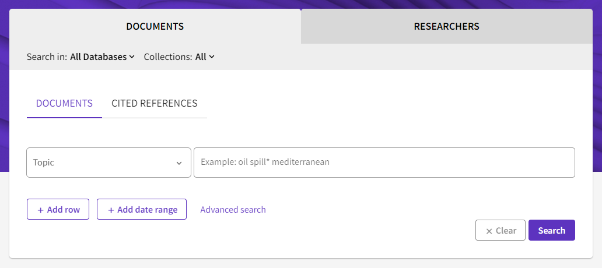
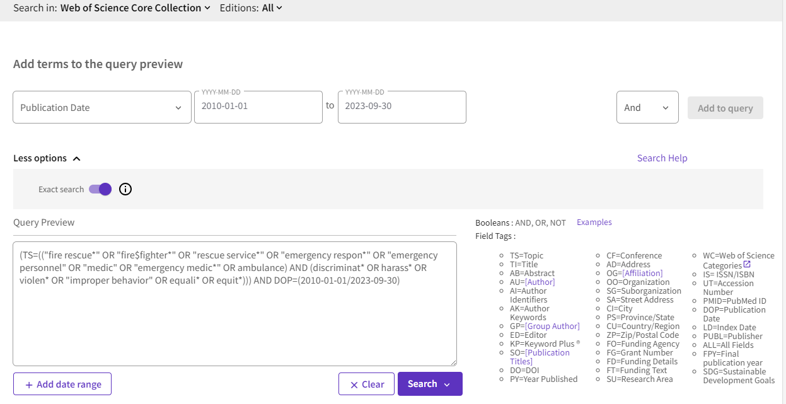
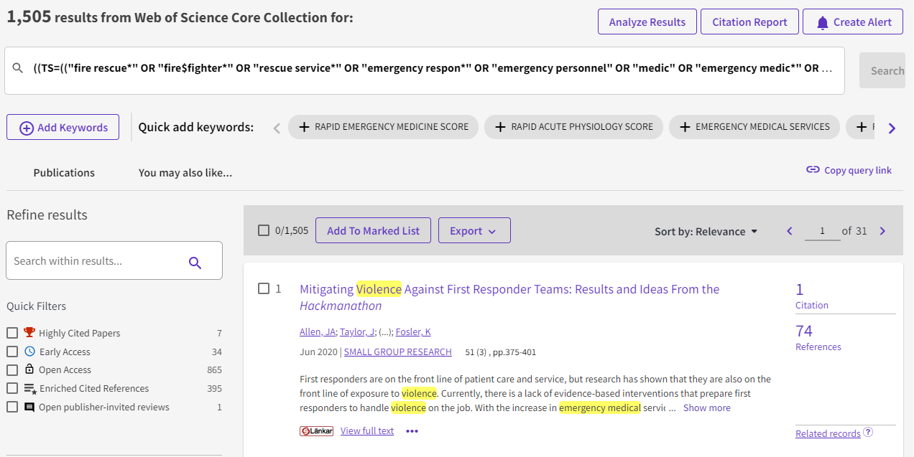
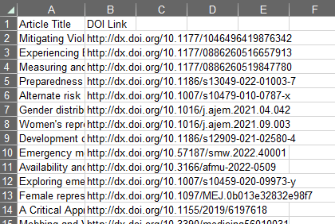

12 Web of Science
Osoite: https://www.webofscience.com/
Sisältö: Yleinen tutkimuskirjallisuus
Saatavuus: Maksumuurin takana (Polamk:illa ei pääsyä)
Aineistotyyppi: Vertaisarvioitu tutkimusraportti, harmaa kirjallisuus
Alusta: Itse kehitetty
Huomioita: Web of Sciencestä haetaan vain vertaisarvioituja tutkimusraportteja. Käytämme seuraavia tietokantoja:
- Web of Science Core Collection (luonnontieteet ja matematiikka, yhteiskuntatieteet, humanistiset tieteet ja taidetutkimus)
- MEDLINE (lääketieteet)

Kirjautuessasi Web of Scienceen näet ensin perushaun näkymän (Kuva 12.1). Painamalla “Advanced search” pääset erikoishakuun, jossa pystyt rakentamaan hakua tarkemmilla asetuksilla.
12.1 Hakulausekkeen muokkaaminen
Web of Sciencessä määritellään useimmat rajaukset hakulausekkeessa. Hakukone tottelee seuraavia sääntöjä hakulausekkeen kirjoittamisessa:
AND,ORjaNOTtoimivat kuten yleensä.Eksaktin haun voi laittaa päälle koko hakulausekkeelle kerralla: Advanced Search > More options > Exact search -täppä. Tällöin Web of Science ei hae vaihtoehtoisia kirjoitusasuja, synonyymeja tai monikkosanoja automaattisesti. Tämä tulee laittaa päälle.
Seuraavat villikortit toimivat:
Asteriski
*vastaa kuinka monta merkkiä tahansa, myös nollaa.Kysymysmerkki
?vastaa yhtä merkkiä, mutta ei nollaa.Dollarimerkki
$vastaa nollaa tai yhtä merkkiä.Tällöin esimerkiksi vaihtoehtoisten kirjoitusasujen löytäminen on helpointa asteriskilla tai dollarimerkillä - mutta esimerkiksi
colo?rlöytää vain sanancolour, ei sanaacolor(koska kysymysmerkki korvaa tasan yhden merkin).
Viivat
-ja heittomerkit'kohdellaan sekä välilyönteinä että omina merkkeinä. Tarkista, että viivoja käyttävät hakusanat toimivat myös välilyönnillä:"fire-fighter"löytää sekäfire fighterettäfire-fighter, mutta ei esimerkiksifirefighter. Parempi vaihtoehto olisifire$fighter, jolloin kaikki kolme vaihtoehtoa löytyvät.Boolelaisten merkkien tulkintajärjestys on: ensin
NOT, sittenAND, sittenOR. Suluilla tämän voi ohittaa; sulut tulkitaan aina sisältä ulospäin. Esimerkki:(a AND (b OR c) NOT d)tulkitsee ensinb OR c, sittenNOT d, sittena AND (sulun sisältö).Web of Science käyttää eri kenttäsanoja riippuen tietokannasta. Taulukosta 12.1 löytyy meille tärkeimmät sanat.
| Kenttäsana | Hakukohde | Tietokanta |
|---|---|---|
TI |
Otsikkohaku | Core Collection + MEDLINE |
AB |
Abstrakti/tiivistelmä | Core Collection + MEDLINE |
TS |
Aihe (hakee otsikosta, abstraktista, avainsanoista ja/tai virallisista ontologioista) | Core Collection + MEDLINE (mutta toimii hieman eri tavalla riippuen tietokannasta) |
Muut hakurajaukset ovat helpointa lisätä Web of Sciencen käyttöliittymässä.
Haut tulee suorittaa jokaiselle tietokannalle erikseen. Aloitan Web of Science Core Collectionista.
Esimerkkinä rakensin seuraavan hakulausekkeen:
TS=(("fire rescue*" OR "fire$fighter*" OR "rescue service*" OR "emergency respon*" OR "emergency personnel" OR "medic" OR "emergency medic*" OR ambulance) AND (discriminat* OR harass* OR violen* OR "improper behavior" OR equali* OR equit*))
Tämä lauseke hakee otsikosta, abstraktista ja avainsanoista.
Tämän jälkeen lisään julkaisupäivämäärärajauksen:

MEDLINE-tietokannassa ei näytä toimivan Publication Date, vaan siinä tulee käyttää Year Published -rajausta.
Tämän jälkeen lisään vielä dokumenttityyppirajauksia. Käytä seuraavia dokumenttirajauksia tietokannittain:
- Core Collection: Article, Book, Book Chapter
- MEDLINE: Classical Article, Clinical Study, Comparative Study, Controlled Clinical Trial, Equivalence Trial, Journal Article, Observational Study, Personal Narrative, Personal Narratives, Pragmatic Clinical Trial, Twin Study, Validation Studies, Validation Study
Näitä voi lisätä pudotusvalikosta valitsemalla “Document Type”. Valitsen tyypit Article, Book ja Book Chapter ja lisään ne AND-sanalla hakulausekkeeseen. Suoritan haun:

Sivupalkista voi lisätä muita rajauksia. Jokaisen kohdalla valitaan halutut rajauskohteet ja painetaan joko “Exclude” (rajaa ulkopuolelle) tai “Refine” (ota vain mukaan valitut). Tässä joitain hyödyllisiä hankkeelle:
Kielen voi rajata vain englanniksi tässä haussa.
Maantieteellisen rajauksen voi tehdä samoin kuin Scopuksessa, eli valitaan halutut maat mukaan ja jätetään muut ulkopuolelle.
Rajausten jälkeen tuloksia on vähemmän (403 kappaletta), mikä kuulostaa jo sopivammalta.
Voit tallentaa haun painamalla “Copy query link” hakutulosten yläoikeassa kulmassa, jolloin pääset takaisin samalle hakusivulle. Dokumentoi tässä vaiheessa myös muut tarvittavat tiedot hausta.
12.2 Tulosten lataaminen
Kun olet tyytyväinen hakuusi, voit ladata tulokset:
Hakutulosten listauksen yläpalkissa, paina
Export > ExcelValitse
Records from:. Tämä antaa automaattisesti kaikki tulokset, kunhan niitä on alle tuhat. Muuten joudut lataamaan tuhat tulosta kerralla, toistaen tässä listatun prosessin.Valitse pudotusvalikko
Record Content > Custom selection > EditPoista kaikki täpät ja valitse vain
TitlejaSource. Source-toiminnon kautta saadaan myös linkki ja julkaisuvuosi. PainaSave selections.Paina
Export. Tietokoneesi latauskansioon latautuu Excel-tiedosto.
Avaa sitten lataamasi tiedosto. Taulukossa on paljon tyhjiä välejä, joten suosittelen ensin siistimistä ja sitten siirtämistä tekemääsi osahaun tulos-Exceliin.
Suosittelen, että säästät vain sarakkeet Article Title, Publication Year sekä DOI Link.

Voit valita kaikki tulokset (vie osoitin soluun A1 ja paina Ctrl + oikea valitaksesi kaikki sarakkeet, ja sitten Ctrl + alas valitaksesi kaikki rivit) ja kopioida ne suoraan tulostaulukkoosi.
Muista toistaa prosessi molemmille tietokannoille (Web of Science Core Collection ja MEDLINE).